The presentation style you select for a DataWindow object determines the format PowerBuilder uses to display the DataWindow object in the Design view. You can use the format as displayed or modify it to meet your needs.
When you create a DataWindow object, you can choose from the presentation styles listed in the following table.
The Tabular presentation style presents data with the data columns going across the page and headers above each column. As many rows from the database will display at one time as can fit in the DataWindow object. You can reorganize the default layout any way you want by moving columns and text:
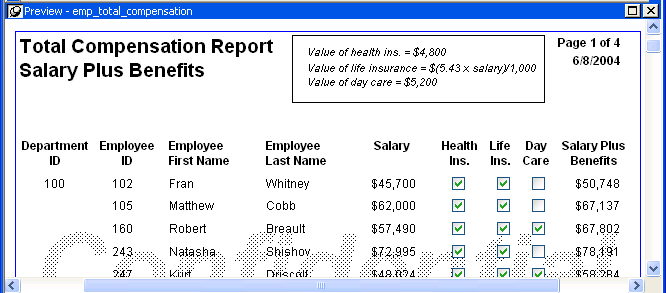
The Freeform presentation style presents data with the data columns going down the page and labels next to each column. You can reorganize the default layout any way you want by moving columns and text. The Freeform style is often used for data entry forms.
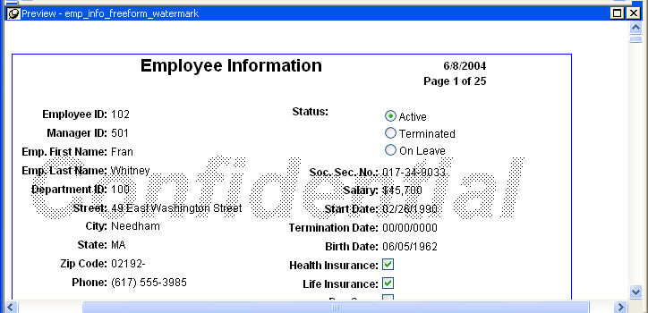
The Grid presentation style shows data in row-and-column format with grid lines separating rows and columns. With other styles, you can move text, values, and other objects around freely in designing the report. With the grid style, the grid lines create a rigid structure of cells.
An advantage of the Grid style is that users can reorder and resize columns at runtime.
This grid report shows employee information. Several of the columns have a large amount of extra white space:
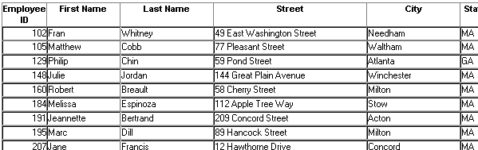
This grid report was created from the original one by decreasing the width of some columns:
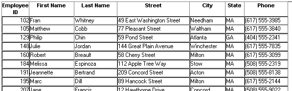
The Label presentation style shows data as labels. With this style you can create mailing labels, business cards, name tags, index cards, diskette labels, file folder labels, and many other types of labels.
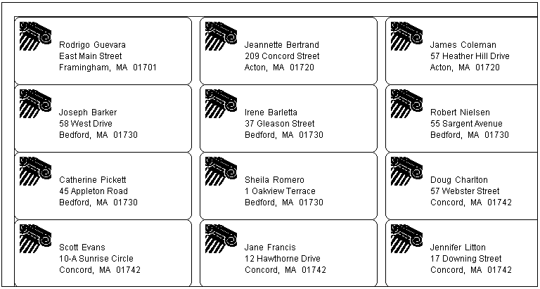
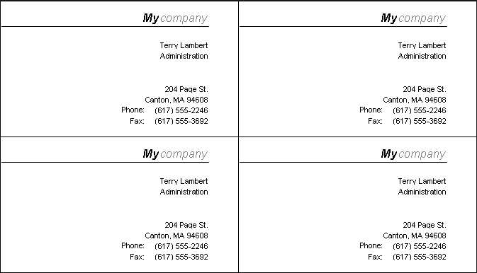
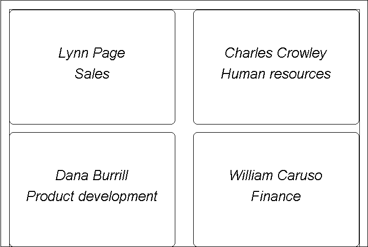
If you choose the Label style, you are asked to specify the properties for the label after specifying the data source. You can choose from a list of predefined label types or enter your own specifications manually.
PowerBuilder gets the information about the predefined label formats from a preferences file called PBLAB105.INI.
The N-Up style presents two or more rows of data next to each other. It is similar to the Label style in that you can have information from several rows in the database across the page. However, the information is not meant to be printed on labels. The N-Up presentation style is useful if you have periodic data; you can set it up so that each period repeats in a row.
After you select a data source, you are asked how many rows to display across the page.
For each column in the data source, PowerBuilder defines n columns in the DataWindow object (column_1 to column_n), where n is the number of rows you specified.
For a table of daily stock prices, you can define the DataWindow object as five across, so each row in the DataWindow object displays five days' prices (Monday through Friday). Suppose you have a table with two columns, day and price, that record the closing stock price each day for three weeks.
In the following n-up DataWindow object, 5 was selected as the number of rows to display across the page, so each line in the DataWindow object shows five days' stock prices. A computed field was added to get the average closing price in the week:
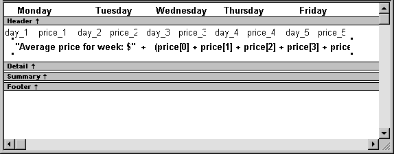
 About computed fields in n-up DataWindow objects You use subscripts, such as price[0], to
refer to particular rows in the detail band in n-up DataWindow objects.
About computed fields in n-up DataWindow objects You use subscripts, such as price[0], to
refer to particular rows in the detail band in n-up DataWindow objects.
Here is the DataWindow object in the Preview view:
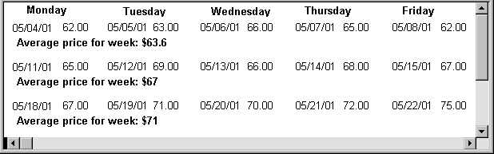
 Another way to get multiple-column DataWindow objects In an n-up DataWindow object, the data is displayed across
and then down. If you want your data to go down the page and then
across in multiple columns, as in a phone list, you should create
a standard tabular DataWindow object, then specify newspaper columns.
Another way to get multiple-column DataWindow objects In an n-up DataWindow object, the data is displayed across
and then down. If you want your data to go down the page and then
across in multiple columns, as in a phone list, you should create
a standard tabular DataWindow object, then specify newspaper columns.
The Group presentation style provides an easy way to create grouped DataWindow objects, where the rows are divided into groups, each of which can have statistics calculated for it. Using this style generates a tabular DataWindow object that has grouping properties defined.
This Group style report groups by department and lists employees and salaries. It also includes a subtotal and a grand total for the salary column:
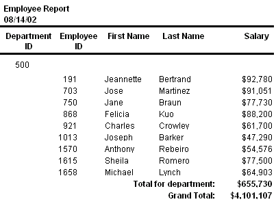
For more about the Group presentation style, see Chapter 23, "Filtering, Sorting, and Grouping Rows ."
The Composite presentation style allows you to combine multiple DataWindow objects in the same object. It is particularly handy if you want to print more than one DataWindow object on a page.
This composite report consists of three nested tabular reports. One of the tabular reports includes a graph:
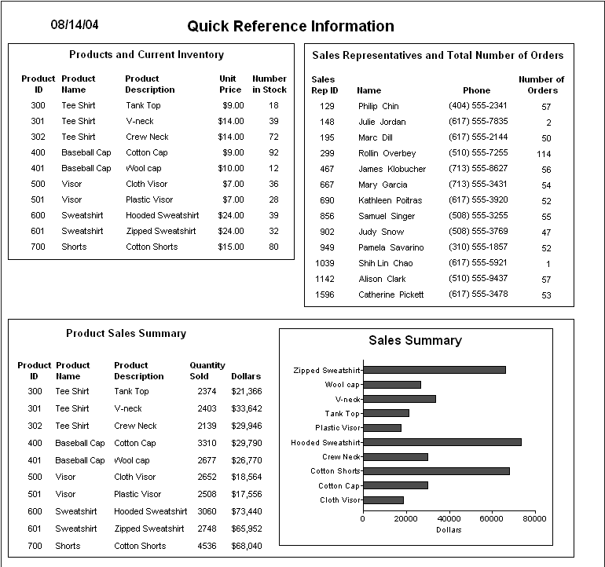
For more about the Composite presentation style, see Chapter 25, "Using Nested Reports ."
In addition to the (preceding) text-based presentation styles, PowerBuilder provides two styles that allow you to display information graphically: Graph and Crosstab.
There is a graph report in the composite report in "Using the Composite style". This crosstab report counts the number of employees that fit into each cell. For example, there are three employees in department 100 who make between $30,000 and $39,999:
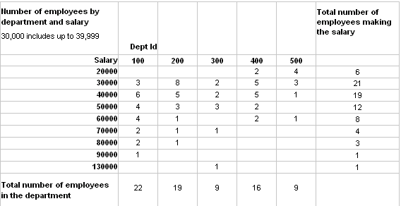
For more information about these two presentation styles, see Chapter 26, "Working with Graphs ," and Chapter 27, "Working with Crosstabs ."
The OLE presentation style lets you link or embed an OLE object in a DataWindow object.
For information about the OLE 2.0 presentation style, see Chapter 31, "Using OLE in a DataWindow Object ."
The RichText presentation style lets you combine input fields that represent database columns with formatted text.
For more information about the RichText presentation style, see Chapter 30, "Working with Rich Text ."
The TreeView presentation style provides an easy way to create DataWindow objects that display hierarchical data in a TreeView, where the rows are divided into groups that can be expanded and collapsed. Icons (+ or –) show whether the state of a group in the TreeView is expanded or collapsed, and lines connect parents and their children.
This TreeView style report groups by manager ID and state and lists employee information and salaries:
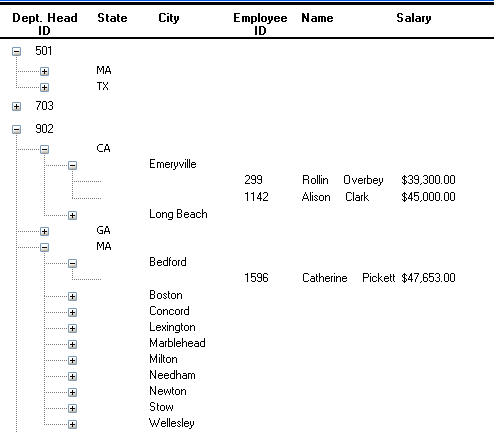
For more about the TreeView presentation style, see Chapter 28, "Working with TreeViews."